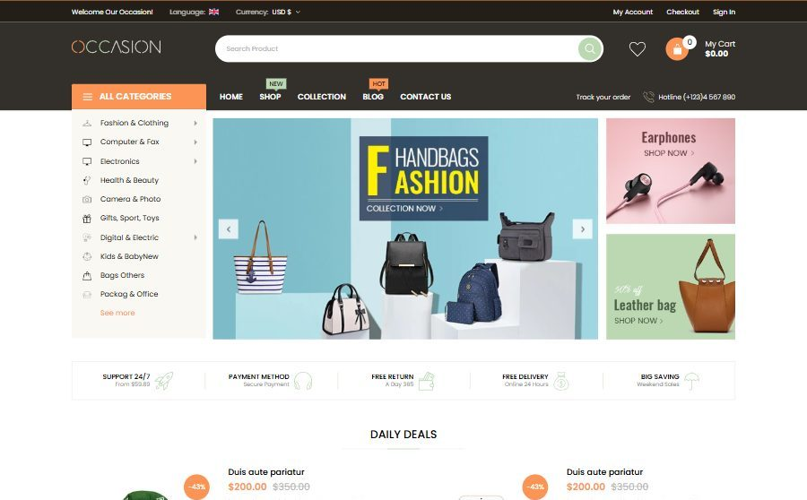
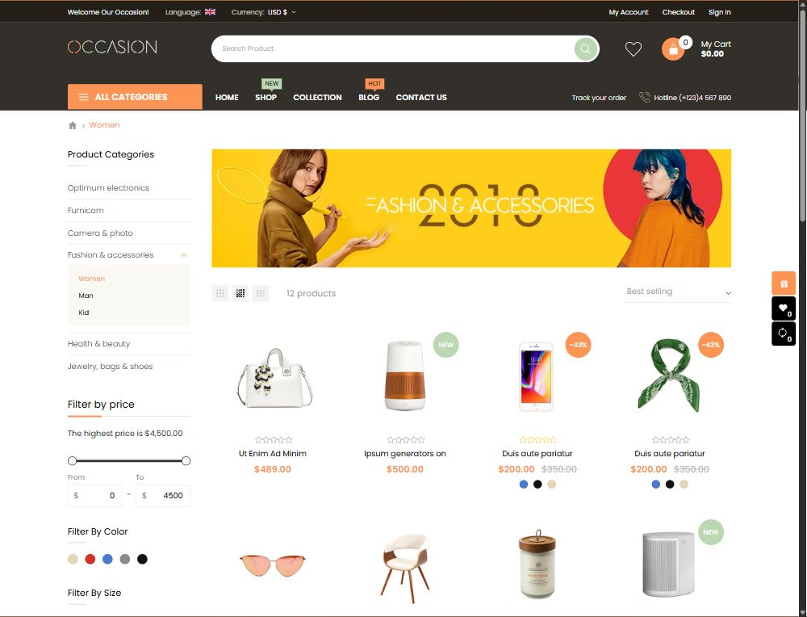
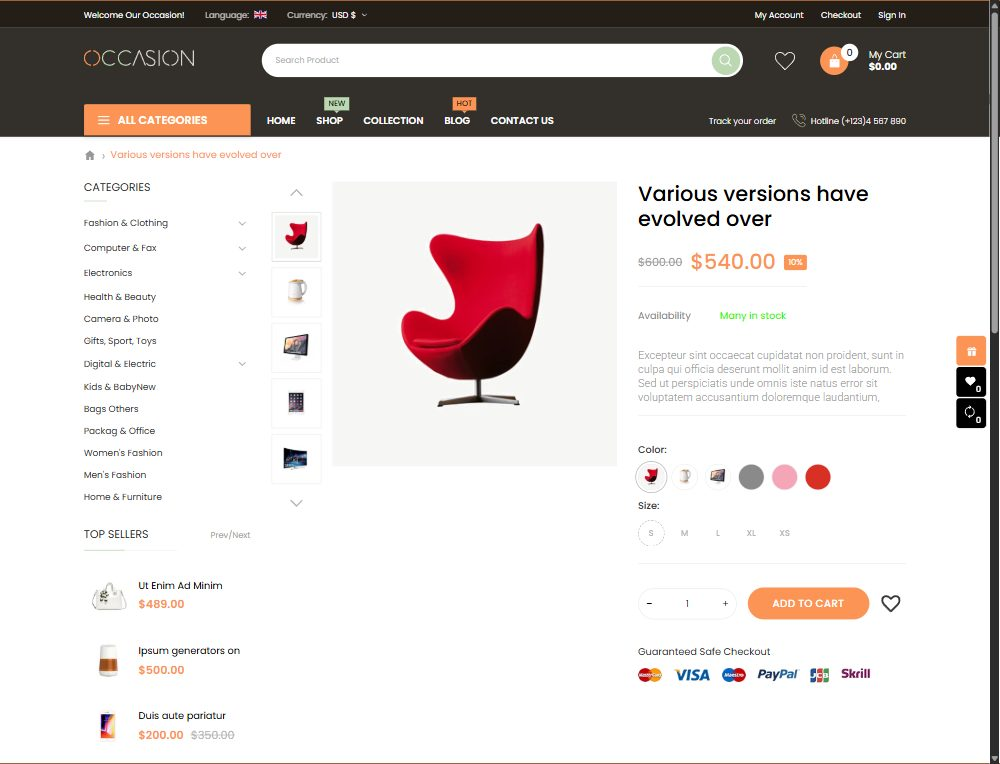
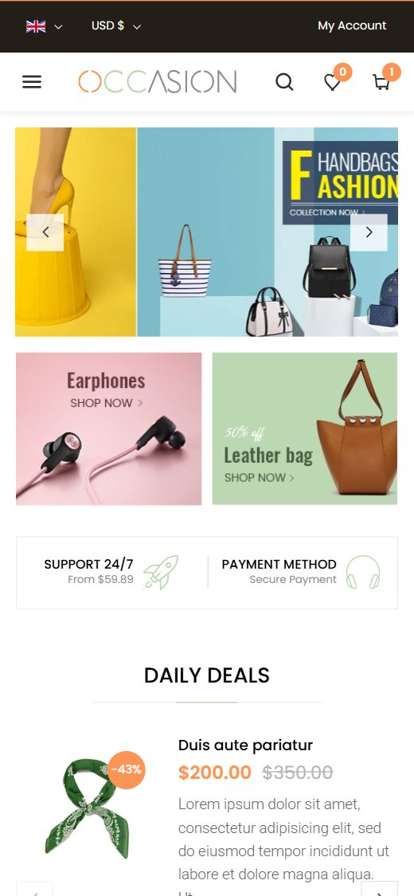
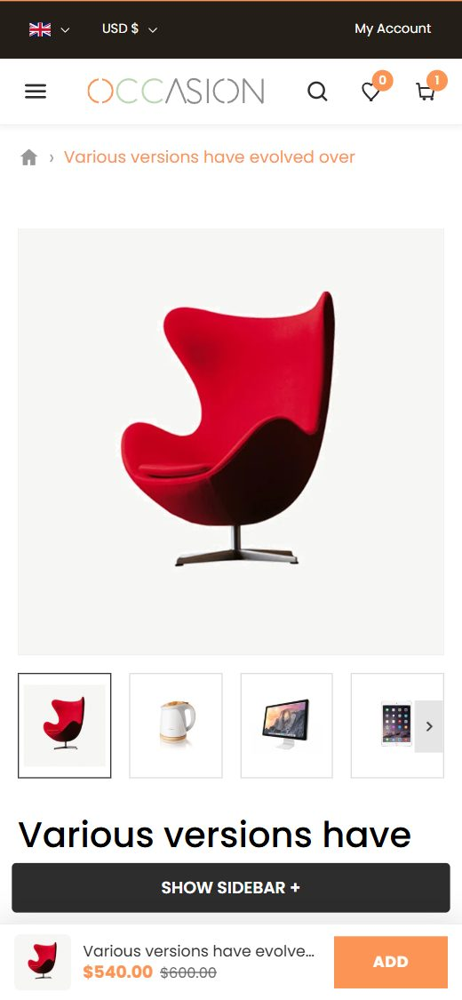

Occasion — multi-category store
The classic Occasion design rebuilt for Online Store 2.0: a dark header with an orange All Categories sidebar, four mega menu styles, Daily Deals with countdown, product tabs and a busy multi-category homepage.
Overview

Install occasion-theme-v2.0.0.zip (how). Every setting below is already in that file: create the content in the Shopify admin, upload your images and pick them in the theme editor. Shared steps (products, variants, swatches, metafields) are in Step 1 · Shopify admin.
All Categories sidebar
Category list with icons, “See more”, and four mega menu styles (columns, icons, banners, compact).
Daily Deals
Two deals with stock bar and countdown, then a product carousel.
Product tabs
Top Rated list next to Hot & New tabs, and New Items with a featured product.
Sidebar pages
Collection and product pages with categories, filters, top sellers and a banner.
Style
Set in Theme settings. Change them to match your brand; everything else follows.
| Setting | Occasion value |
|---|---|
| Fonts | Headings and body Poppins |
| Colors | Primary #FB9455, secondary #BBD8B2, text #2D2D2D, footer #FFFCFA |
| Product cards | Occasion layout: round quick view, cart and compare buttons over the image; round sale and NEW labels top right |
| After adding to cart | Confirmation popup (Continue shopping / Go to cart) |
Build the store: roadmap
| # | Where | What to do | Guide |
|---|---|---|---|
| 1 | Admin | Store settings, metafields, products with Color / Size variants | Step 1 |
| 2 | Admin | Create the collections below | Collections |
| 3 | Admin | Create the menus below | Menus |
| 4 | Admin | Pages (Contact, About, FAQ, Size Guide, Wish list, Compare) and the News blog | Pages |
| 5 | Admin | Automatic discount “Buy 3 get 20% OFF” for the bundle | Discounts |
| 6 | Editor | Header, navigation and mega menu blocks | Header |
| 7 | Editor | Homepage: images, texts and collections of each section | Homepage |
| 8 | Editor | Collection, product, blog and contact pages | Pages |
Collections
Create these collections (how). The handle matters: theme settings and menus link to it.
| Title | Handle | Used by |
|---|---|---|
| Optimum electronics, Furnicom, Camera & photo, Fashion & accessories, Health & beauty, Jewelry, bags & shoes | optimum-electronics, furnicom, camera-photo, fashion-accessories, health-beauty, jewelry-bags-shoes | Collection sidebar, homepage banners and tabs |
| Women, Man | women, man | Trending Items, sub-categories of Fashion & accessories |
| Home page | frontpage | Daily Deals carousel |
Header
| Setting | Occasion value |
|---|---|
| Desktop layout | Classic (with navigation bar) |
| Top bar | Announcement, language and currency pickers (currency list from Settings → Markets), My Account, Checkout, Sign in |
| Navigation | All Categories button + Main menu, menu badges Shop|NEW|#bbd8b2|#000000 and Blog|HOT|#fb9455|#000000 |
| Category icons | Files named after each menu item (for example fashion-clothing.png) or Category icon blocks |
Mega menu blocks
In Navigation, add one block per menu item. Category menu title must match the menu item's title.
| Menu item | Block | Content |
|---|---|---|
| Fashion & Clothing | Mega menu style 3 | Columns with an icon above each heading, side banner |
| Computer & Fax | Mega menu style 4 | Four columns and a wide bottom banner |
| Electronics / Digital & Electric | Mega menu compact | 3 or 2 columns in a narrow panel (600 / 440 px) |
Homepage
Sections from top to bottom. Open each one in the editor and replace images, texts and collections.
| # | Section (editor name) | What to set |
|---|---|---|
| 1 | Home hero | Slides next to the categories sidebar, square arrows at the sides, two side banners |
| 2 | Home services bar | Five services with icons |
| 3 | Daily deals | Two deal products, stock numbers, daily countdown |
| 4 | Product grid / carousel | Collection Furnicom as a carousel |
| 5 | Image banners (×4) | Banner grid, wide banner and banner pairs between the product sections |
| 6 | Product grid / carousel | “Trending Items”, collection Women, grid |
| 7 | Top rated + tabs | Top Rated list and Hot & New tabs |
| 8 | New items | Featured product with colour dots and thumbnails, collection tabs |
| 9 | Home latest news | Blog News, overlay cards |
| 10 | Home Brand Logos, Home Instagram | Six brand logos, six Instagram photos |
Pages
| Page | Occasion setup |
|---|---|
| Collection | Sidebar with categories, price slider, colour / size / brand filters, tags, sale products and a banner; grid / list view switcher (3 and 4 columns) |
| Product | Left sidebar (categories, top sellers, banner, custom block), thumbnails under the image, tabs for description, reviews and additional information |
| Cart, wishlist, compare | Free shipping progress, shipping estimate, coupon; wishlist and compare pages |
| Blog, contact | Blog with sidebar and recent posts; contact form with map and store details |






Image sizes
About twice the displayed size so images stay sharp on retina screens. Set the focal point after picking an image.
| Where | Recommended size (px) | Shape |
|---|---|---|
| Products | 1334 × 2000 (portrait 2 : 3) or larger | Light, even background |
| Hero slides | 2400 × 1000 (full width) / 1500 × 790 (next to the categories) | Wide |
| Image banners | 1200 × 700 (half), 2400 × 600 (wide strip) | Landscape |
| Collection banner / image | 2400 × 700 | Wide |
| Mega menu banners | 900 × 600 (side) / 1100 × 300 (bottom) | Landscape |
| Blog featured images | 1200 × 900 | Landscape 4 : 3 |
| Newsletter popup photo | 700 × 1000 | Portrait |
| Brand logos, Instagram | 400 × 200 / 800 × 800 | Wide / square |